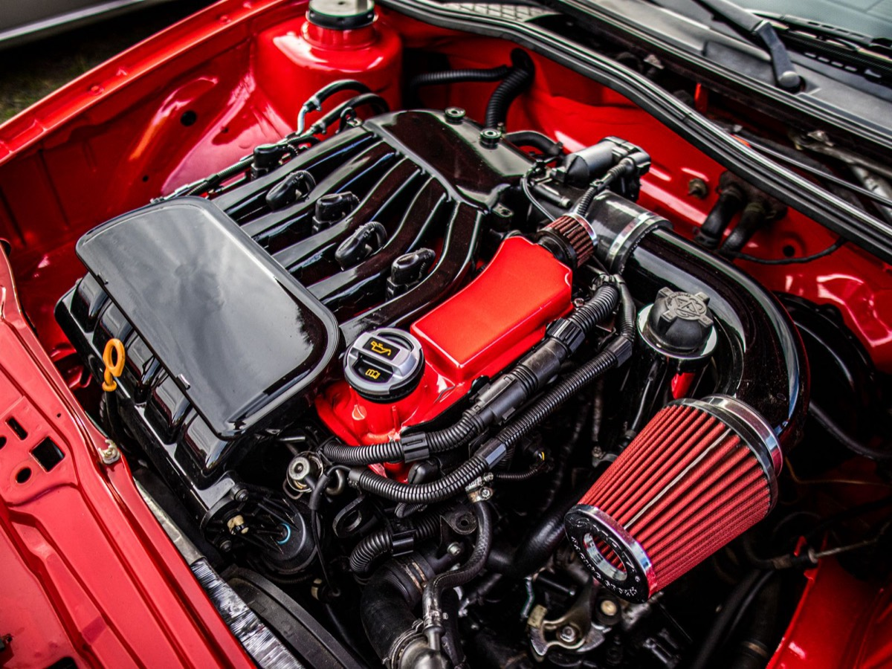
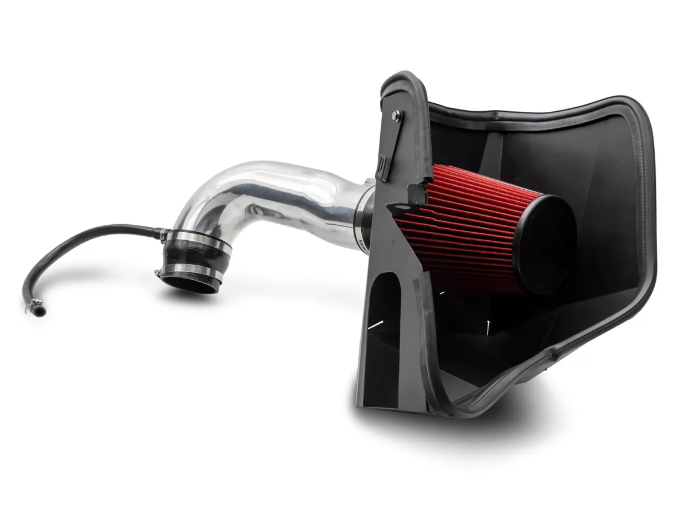
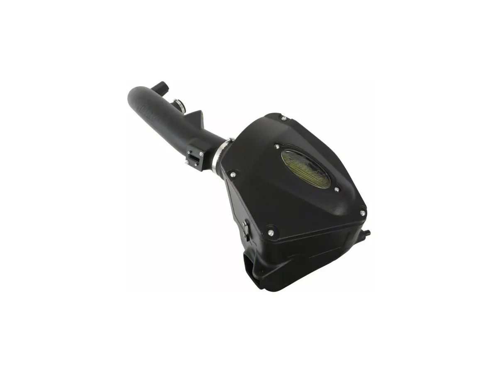
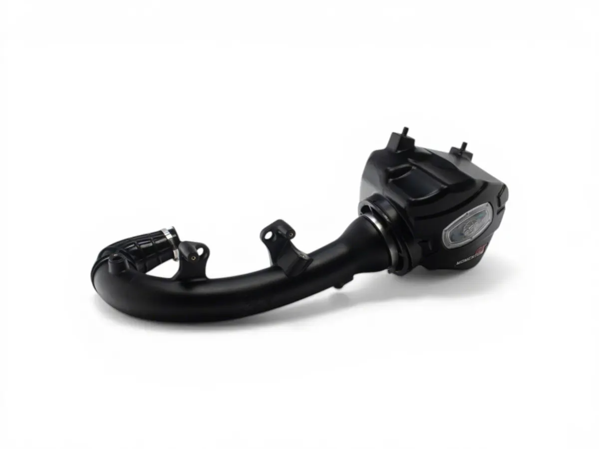
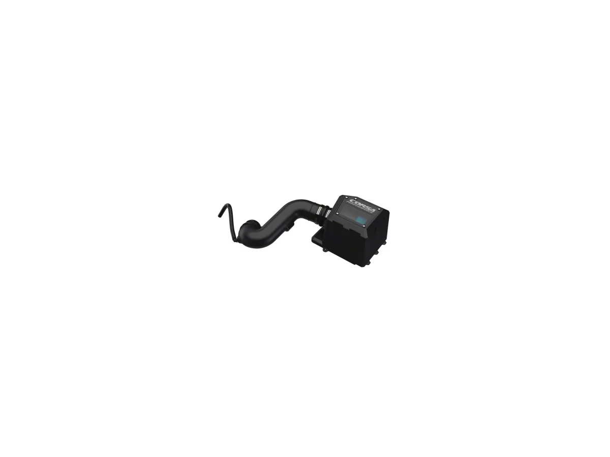
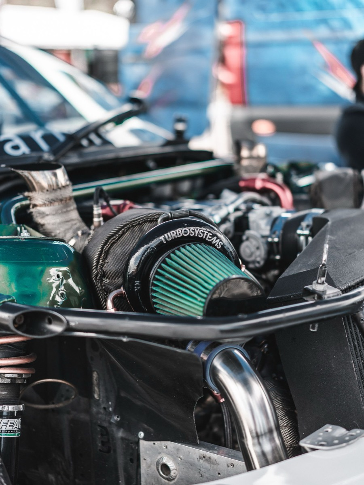

Is a Cold Air Intake CARB-Legal in California? Four Listings, One Answer
If you are buying an intake for a truck registered in California, the question is not whether it adds power. It is whether it has an Executive Order number, because that is what the smog inspector looks for. I read four Silverado 1500 intake listings on 12 November 2026 and searched each one for CAR
If the truck is registered in California, the question is whether the intake has an Executive Order number, not whether it adds power. All four listings read for this article state their status, and all four say the part is not legal in California.
The inspector is not measuring your horsepower — they are looking for an EO identification plate under the hood. An intake without one fails the visual inspection on its own, before any emissions test is run, so the truck can pass the tailpipe and still fail.
If you are buying an intake for a truck registered in California, the question is not whether it adds power. It is whether it has an Executive Order number, because that is what the smog inspector looks for.
I read four Silverado 1500 intake listings on 12 November 2026 and searched each one for CARB language. All four state their status. All four say the part is not legal in California.
That is the useful finding, and it is the opposite of what the shopping pages imply by putting it where you will not read it. Every one of these sellers has disclosed the answer. None of them put it where a buyer looking at a price and a photo will see it. The information is on the page and it is easy to miss, which is a different problem from a seller who says nothing — and the four listings show four different ways of hiding the same sentence.
What actually happens at inspection
A replacement air intake is an emissions-related modification. In California it must be covered by an Executive Order issued by the Air Resources Board, and the part must carry an EO identification plate that can be seen under the hood.
The inspector is not measuring your horsepower. They are looking for that plate. An intake with no EO number fails the visual inspection on its own, before any emissions test is run — so the truck can pass the tailpipe test and still fail the inspection, on a part that was sold without a warning.
There is no national rule that fixes this for you. A part that is entirely legal in Arizona or Nevada is a fail in California, and the seller’s returns policy is the only thing standing between you and a used intake you cannot register a truck with.

The four intakes, as they were written on 12 November 2026
I opened each listing and searched the full page source for “CARB”, “E.O.” and “executive order” — not just the visible description. Prices were read off the same pages at the same time.
| Intake | Fits | Price | What the listing says about CARB | Where it says it |
|---|---|---|---|---|
| RedRock Cold Air Intake, Polished | 2019–2026 5.3L, 6.2L | $189.99 | “not currently CARB compliant” | Q&A block, lower page |
| AIRAID Performance Cold Air Intake | 2019–2026 2.7L | $318.00 (from $368.00) | “Does Not Have a CARB EO Number” | Features bullet |
| aFe Momentum GT, Pro DRY S | 2019–2026 2.7L | $435.00 | “Not CARB Certified… not legal for use in California” | Description, mid-page |
| Corsa Closed Box, Donaldson PowerCore | 2019–2026 5.3L | $475.99 | “CARB EO Pending… currently not legal for use in California” | Description, near the end |
Prices are AmericanTrucks list prices on 12 November 2026. AIRAID was on sale: $318.00 against a regular $368.00, a $50.00 reduction the listing showed as 14% off.
Look at the last column. The cheapest part keeps its disclosure in a customer question at the bottom of the page. The most expensive one buries it three sentences from the end of a long description, behind a note about the warranty. Not one of the four leads with it.
Price tells you where a part sits in the range. It tells you nothing about whether you will find the one sentence that decides whether you can register the truck, and on this sample a higher price did not buy a clearer warning.
Here are the four listings, so you can check the wording yourself rather than take my summary of it:

RedRock Cold Air Intake, Polished → $189.99 · checked 12 Nov 2026 · 2019–2026 5.3L, 6.2L

AIRAID Performance Cold Air Intake → $318.00 (from $368.00) · checked 12 Nov 2026 · 2019–2026 2.7L

aFe Momentum GT, Pro DRY S → $435.00 · checked 12 Nov 2026 · 2019–2026 2.7L

Corsa Closed Box, Donaldson PowerCore → $475.99 · checked 12 Nov 2026 · 2019–2026 5.3L
None of these four is CARB-legal in California. The links are here so you can read the disclosure on the listing, not because there is a version of any of them you should buy.

Four listings, four places to hide one sentence
RedRock — in the Q&A, answering a question you would have to think to ask. The exchange reads: “Is the CA AQMD approved.... AKA CARB approval??” and the store answers “This RedRock cold air intake is not currently CARB compliant.” That answer is correct and direct. It is also the only place on the page the word CARB appears, it sits below the fold in a five-question panel, and it is answering a shopper who already knew to ask. It does not appear in the product description at all.
AIRAID — as a feature bullet. “Does Not Have a CARB EO Number” is printed in the features list, between “No Tuning Required” and the warranty line, as a plain bullet. It is not a warning box, it is not in red, and it is not repeated in the description beside it.
There is nothing deceptive about stating it. There is something revealing about where it sits: the same sentence that disqualifies the part from a California registration is formatted as a feature, at the same weight as “Bolt-On Design for Hassle-Free Installation”.
aFe — in the middle of the description, in plain prose. “Not CARB Certified. This AFE Cold Air Intake is not CARB certified at this time, therefore it is not legal for use in California or other states adopting California emission standards.” This is the most complete of the four: it names California and the adopting states, and it says why. It follows two paragraphs about horsepower and install time.
Corsa — at the very end, after the warranty paragraph. “CARB EO Pending. This PowerCore Closed Box Cold Air Intake is currently not legal for use in California or other states adopting California emissions standards.” “Pending” is the optimistic framing of the same fact and it is the one that matters least at an inspection: an EO that has not been issued is not an EO. What the inspector reads is the plate, and there is no plate for a pending order.
For a buyer outside California all four of these are neutral information. For a buyer inside California each one is the whole answer, and every one of them is one scroll away from where you decide to buy.
Treat this as the worked example for every listing you shop: the disclosure exists, and it is usually not where the price is. On this sample, four out of four sellers disclosed and four out of four made it easy to miss — which is not the same as having an EO number nobody mentioned.
How to check a part before you buy it
Two checks, in order, before any money moves.
One — search the manufacturer’s own CARB documentation by part number. Every manufacturer that sells a legal intake maintains this, and it is keyed on the part number, not the marketing name. “Momentum GT” is not a part number.
Two — check the Executive Order itself. CARB publishes Executive Orders by category, and the agency’s own page for this is ww2.arb.ca.gov/executive-orders-certifications-verifications, which states plainly that Executive Orders are written documentation of compliance and are listed by category. It also warns that some orders are available only in hard copy, so a part can be legal and still be awkward to confirm. Email helpline@arb.ca.gov with the part number rather than guessing.
The retailer is not the authority here and neither is this article. The EO number is, and it is printed on a plate under the hood for the inspector to find.
What I would do with this set
If the truck is registered in California, none of these four is a legal purchase, and none of the four leaves you guessing about it. All four say no. Two say it outright (aFe, Corsa), one says it as a bullet (AIRAID), and one says it only if you open the Q&A at the bottom of the page (RedRock).
The practical problem is not seller honesty on this sample. It is that a disclosure which arrives after the price, after the photos and after the horsepower paragraph does not change a decision. Read for the EO number before you read for anything else.
The sequence is: find the part you want, get its actual part number, search CARB for that number, and only then decide. If the manufacturer has no published EO for that part number, the answer is no regardless of what the store page implies. “Pending” is not an EO. “Not certified at this time” is not an EO.
If you are outside California, this whole section does not bind you — but check your own state, because California is the strictest, not the only, state with an emissions visual inspection. Arizona, Nevada, Colorado and a dozen others run some form of emissions programme, and several of them adopt California’s standards outright. A part that is fine at home and a fail three states away is still a part you cannot use on the trip you bought it for.
Frequently asked questions
Does a cold air intake need a CARB number in California?
Yes. It is an emissions-related part, it needs an Executive Order, and it needs the EO plate fitted where an inspector can see it. That applies to a 2019-or-newer truck and to older ones still running their original emissions equipment.
Will a CARB-legal intake say so on the listing?
On this sample, all four listings mentioned CARB and all four were stating they do not comply. A listing that mentions CARB is telling you something; a listing that does not is telling you less, not clearing the part. Either way, the listing is not the record — the EO number is.
Can I pass a smog test with an illegal intake?
You can pass the emissions measurement and still fail the inspection, because the visual check for the EO plate happens independently of the tailpipe reading.
Is the same intake legal in other states?
That is a state-by-state question with no single answer. California is the strictest and requires an EO; other states vary. The part number and the manufacturer’s CARB documentation are what you check, not the store page.
What is the cheapest way to stay legal?
Ask the seller for the EO number before you buy, in writing. A part with a published EO number in the listing is worth more than a cheaper one that is silent about it, because the cheaper one may cost you the whole intake a second time.
CarModReview may earn a commission from purchases made through links on this page, at no extra cost to you.
Topics
- Engine & Intake
- aFe
- AIRAID
- Corsa
- RedRock
- Silverado 1500
- 5.3L
- 6.2L